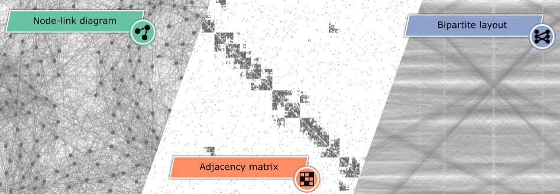

Comparative Evaluation of Bipartite, Node-Link, and Matrix-Based Network Representations
(opens in new tab)

Venue. TVCG (2022)
Materials.
DOI(opens in new tab)
PDF(opens in new tab)
Abstract. This work investigates and compares the performance of node-link diagrams, adjacency matrices, and bipartite layouts for visualizing networks. In a crowd-sourced user study ( n=150 ), we measure the task accuracy and completion time of the three representations for different network classes and properties. In contrast to the literature, which covers mostly topology-based tasks (e.g., path finding) in small datasets, we mainly focus on overview tasks for large and directed networks. We consider three overview tasks on networks with 500 nodes: (T1) network class identification, (T2) cluster detection, and (T3) network density estimation, and two detailed tasks: (T4) node in-degree vs. out-degree and (T5) representation mapping, on networks with 50 and 20 nodes, respectively. Our results show that bipartite layouts are beneficial for revealing the overall network structure, while adjacency matrices are most reliable across the different tasks.
Link to this page: